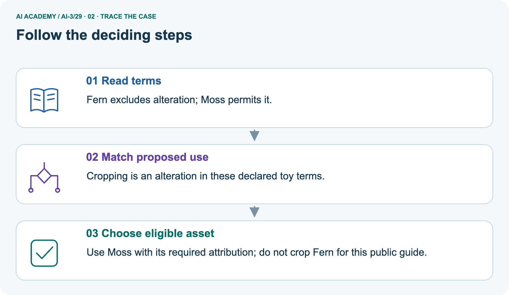
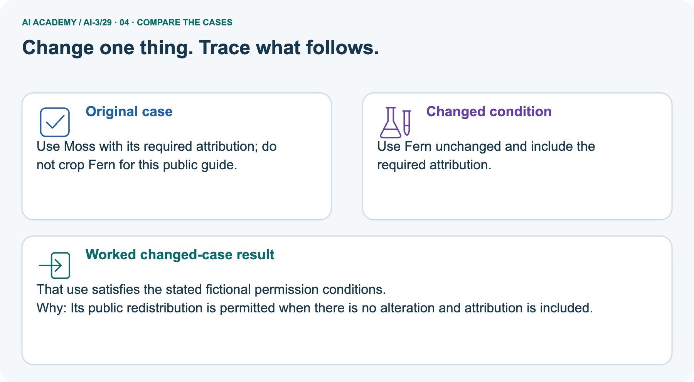
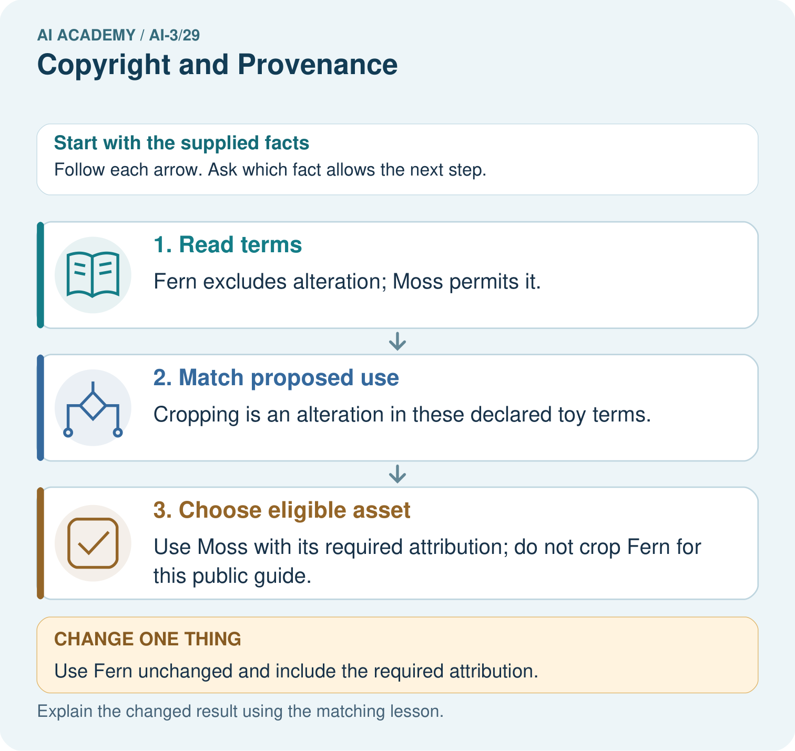
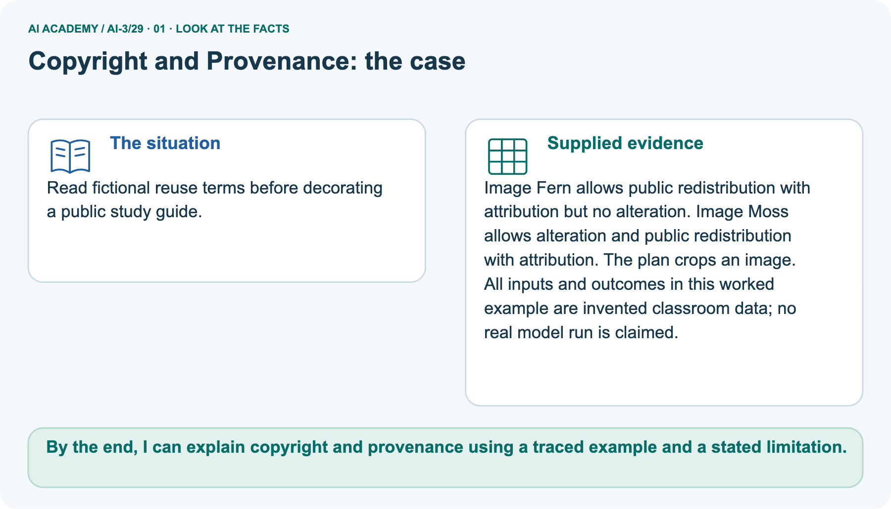
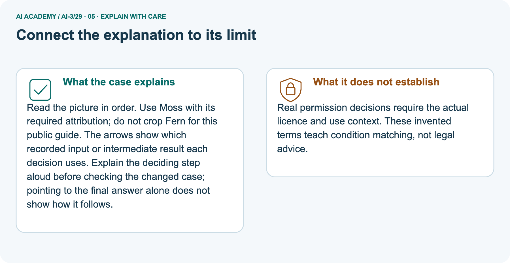
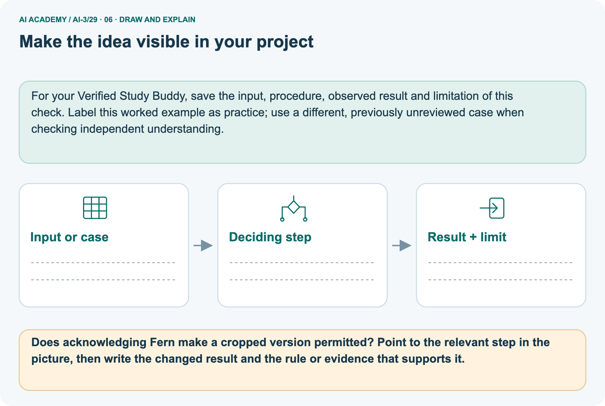

AI Academy · Level 3 · Grade 8 · Week 29 · Student lesson
Copyright and Provenance
Learn to understand, design, build, test and explain AI systems responsibly.
Project: Verified Study Buddy
THE CONNECTED WEEK
Trace the origin. Match the use. Preserve the conditions.
Build a provenance ledger without treating credit or generated origin as automatic permission.
Keep one habit: Ledger fields → Fern/Moss crop trace → six mixed assets → missing terms → independent quotation check.
Main lesson · Section 1
Can this source be used in this exact output?
Trace origin, edits, attribution and the supplied permission conditions separately.
Your learning goals
I can explain the mechanism and terminology of copyright and permitted sources.
I can apply the stated procedure to a new case with a traceable result.
I can identify an assumption or limitation and design a revealing follow-up.
Recall sources and copied locations
Close your notes first. A rough first answer helps us choose the right starting point; it is not a score for your ability.
Recall Privacy by Design: know where material came from, why it is used and where copies go. Provenance records explain a work’s origin and changes; permitted reuse must be checked separately.
Your end goal
By the end, I can explain copyright and provenance using a traced example and a stated limitation.
Earlier wording, alternatives and picture transcripts
Your learning target
Remember before reading
Without opening the old lesson, explain one key idea from Privacy by Design. Give an example and a mistake that the idea helps you avoid.
Without opening the old lesson, explain one key idea from Evaluation Sets. Give an example and a mistake that the idea helps you avoid.
Without opening the old lesson, explain one key idea from Block to Python Bridge. Give an example and a mistake that the idea helps you avoid.
After trying, check the relevant lesson or ask your teacher. Change the part of your explanation that the evidence shows was wrong.
Week 29: Copyright and Provenance
Responsible creation distinguishes source material, transformation, attribution, and generated content.

CREATOR MISSION
Create a provenance record for a mixed-media output.
Creator name and date:
Readiness for the connected explanation
This week’s end goal
Main lesson · Section 2
Give origin and permission different fields
A clear credit line does not change an explicit fictional restriction.
Understand provenance and permitted use
Provenance is the record of where material came from and how it changed. Attribution identifies a source or creator; permission describes an allowed use. Seeing an image online does not itself tell you whether public redistribution or editing is allowed. This lesson matches complete fictional terms to a proposed use. Its invented labels and word limits are not real licence names, legal exceptions or universal rules.
Permission to access a work and permission to redistribute or modify it are separate. Use a classroom licence ledger instead of assuming all online material is reusable.
Use only supplied classroom records
Begin by writing the question the procedure is intended to answer. Identify the information already supplied, the information it will produce and the information still missing.
These are constructed classroom examples; they do not require live accounts, private records or an external service. Do not treat a plausible explanation as a measured outcome.
Earlier wording, alternatives and picture transcripts
PICTURE STORY
Notice → Predict → Explain
Begin with visible evidence. Do not explain more than the picture and information support.
MYSTERY
The learners must use copyright and provenance to solve a problem. What information do they have? What decision or calculation do they make? What would count as evidence that it worked?
Three observations (what you can point to):
My prediction and the clue supporting it:
A closer explanation
Main lesson · Section 3
Match the actual use to the exact conditions
A permission record is scoped to the proposed operation and audience.
Read the L/M fictional rules
For this fictional policy, licence L permits classroom display with attribution but forbids public redistribution. Licence M permits adaptation and redistribution with attribution.
Unknown permission means seek approval or choose a permitted alternative; this exercise is not a legal ruling.
Keep a complete provenance ledger
| Ledger field | What to preserve |
|---|---|
| Asset identity | Stable ID, source location and supplied creator |
| Terms | Exact fictional permission text and version |
| Proposed use | Classroom/private/public; unchanged/quoted/adapted |
| Transformations | Crop, paraphrase, combine or generated contribution |
| Required credit | Creator/source/terms notice required by this card |
| Decision and gap | Matches supplied terms, needs revision, or unknown permission |
| Output provenance | Where used, edits made and fictional/generated labels; no invented authenticity claim |
Explain the deciding check
Point to the input, the deciding step and the result in this week’s visual. Explain the same step in ordinary words. A picture helps when you can say what each part represents.
Earlier wording, alternatives and picture transcripts
VISUAL MECHANISM
Input → Process → Output
Trace the information. At each stage, ask what changed and how you could test it.

↓

↓

Which stage could fail even when the other two are correct? Explain:
A closer explanation
Copyright and permitted sources — evidence trace
Before applying the procedure, write its units, denominator or decision boundary where relevant. A partner should be able to repeat each step using the same inputs.
If a required input is absent or violates the stated contract, record that condition explicitly instead of quietly replacing it with a convenient value.
Connect the picture and the explanation
Main lesson · Section 4
Compare access, acknowledgement and permitted alteration
A source can allow unchanged distribution while excluding cropping under its own toy terms.
Four pictures with a purpose

Normal case: predict the result and deciding evidence.

Boundary case: identify the exact limit.

Missing information: name what must be clarified.

Transfer case: explain which procedure still applies.
Choose a revealing case
Which case is most likely to reveal a hidden assumption? Why?
Predict the supplied changed case
Change: Use Fern unchanged and include the required attribution.
Check after predicting
Prediction: That use satisfies the stated fictional permission conditions.
Reason: Its public redistribution is permitted when there is no alteration and attribution is included.
Earlier wording, alternatives and picture transcripts
CASE GALLERY
Four Tests, Four Kinds of Evidence
A system is not understood until it survives more than one comfortable example.
NORMAL CASE: predict and name evidence. BOUNDARY CASE: predict and name evidence.
MISSING INFORMATION: predict and name evidence. TRANSFER CASE: predict and name evidence.
Change one thing in the pictured case
Main lesson · Section 6
Trace Fern and Moss against the crop plan
Changing the planned use can change the match without changing the source.
Read the complete asset terms and use
Read fictional reuse terms before decorating a public study guide.
Image Fern allows public redistribution with attribution but no alteration. Image Moss allows alteration and public redistribution with attribution. The plan crops an image.
All inputs and outcomes in this worked example are invented classroom data; no real model run is claimed.
Fictional terms version F1: Fern permits public redistribution with attribution but no alteration. Version M1: Moss permits alteration and public redistribution with attribution. In these declared terms cropping counts as alteration. Thus a cropped public guide can use Moss with credit; an unchanged credited Fern is separately allowed.
This is a condition-matching exercise, not a ruling about an actual image or legal exception.
Trace alteration and attribution conditions



Read the picture one step at a time
Read the picture in order. Use Moss with its required attribution; do not crop Fern for this public guide. The arrows show which recorded input or intermediate result each decision uses.
Explain the deciding step aloud before checking the changed case; pointing to the final answer alone does not show how it follows.
Predict unchanged credited Fern
Change one thing: Use Fern unchanged and include the required attribution. Predict the result before checking the explanation. What remains the same?
Check after predicting



State the fictional-terms limit
Real permission decisions require the actual licence and use context. These invented terms teach condition matching, not legal advice.
Read the labelled picture: Does acknowledging Fern make a cropped version permitted? Point to the relevant step in the picture, then write the changed result and the rule or evidence that supports it.
Separate practice · Images A/B under L/M
Image A has L; image B has M. The project is a publicly downloadable adapted poster.
A is not permitted for this use under L. B is permitted under the supplied M terms with attribution. Keep licence version and provenance.
Earlier wording, alternatives and picture transcripts
WORKED EVIDENCE
Reason Step by Step
Predict first. Then check each step. A correct answer without visible reasoning is incomplete evidence.

1. Source paragraph is quoted within allowed classroom use and cited.
2. Student summary is a transformation but still names the source.
3. Generated image is labeled as generated.
4. Provenance record stores creator/source, license or permission, transformation, and use.
Recalculate, retrace, or restate the reasoning in your own representation:
CHECK Did the evidence answer the exact question? Did the total, path, or source record stay consistent?
A closer explanation
Compare the intermediate evidence with the final statement. Explain why each number or decision follows from the stated inputs.
The conclusion belongs to this scenario and procedure; changing the inputs, evaluation population or authority can change what it establishes. Retain the raw record so a later revision can be compared honestly.
Learn from the worked case
Cover the result before checking it. Say what is given, choose the procedure, and follow one step at a time. Then uncover the result and explain your first mismatch. Ask why a step is allowed, not only what number it produces.
A pictorial worked case: Copyright and Provenance
The facts we will use



Why this result follows
What this example does not establish
Main lesson · Section 7
Find credit used as a replacement for permission
Keep every declared condition in the decision.
Repair the credit-only shortcut
Claim to repair: Credit Fern’s creator and the crop becomes allowed. Under F1, attribution and no alteration are separate required conditions; satisfying one cannot erase the other. Another shortcut is calling a generated background automatically free to reuse: a generated label records its origin but does not supply missing tool terms or resolve other rights.
Preserve the unknown and choose a supplied permitted alternative for the exercise.
Design a revealing follow-up
Earlier wording, alternatives and picture transcripts
ERROR DETECTIVE
Compare → Diagnose → Repair
Do not patch the answer. Find the earliest unsupported assumption, wrong step, or weak evidence.

| Evidence record | Expected | Actual | Likely cause / next test |
|---|---|---|---|
| normal case | works | ||
| boundary case | stated rule | ||
| missing input | safe response | ||
| fresh transfer | generalizes |
Repair one cause. Why is this repair better than changing several things?
A closer explanation
Complete the supported workbook tasks before attempting W4 independently. Record any hints or help used. After feedback, use the teacher's fresh retry rather than copying the earlier answer.
For a project, select a relevant new case, predict the outcome from the declared rule and preserve the result alongside any revision.
Main lesson · Section 8
Practise the L/M public-poster decision with less help
Keep its invented licence labels separate from Fern/Moss.
The scope and legal-exception limit
Real legal outcomes depend on jurisdiction and facts; supplied licence terms define this classroom exercise, not universal copyright law.
Complete image A/B W2
Practise with less help: Trace the worked case
Use workbook W2 for the connected example “Copyright and permitted sources”. First fill the input and rule boxes. Try the middle steps before asking for a hint. After a hint, try the next step yourself.
| Plan | Do | Check |
|---|---|---|
| What is given? Which rule or procedure applies? | Record each intermediate step. | Does the result follow? What remains unknown? |
Audit an all-future-cases claim
Use the worked case for Copyright and permitted sources. Proposed explanation: “The worked result establishes every future case”. Decide whether this explanation is supported.
Point to the step or supplied fact that decides; explain your repair if needed.
Answer on your own before discussion. If you are unsure, say which step you need help with.
Check your reasoning
Explain the pictured alteration condition
Does acknowledging Fern make a cropped version permitted? Point to the relevant step in the picture, then write the changed result and the rule or evidence that supports it.
Explain the picture
Keep independent quotation work separate
This is supported practice. Keep the separately named independent case for an attempt before feedback.
Earlier wording, alternatives and picture transcripts
LOGIC STUDIO
Specify Before You Run
Prompts, schemas, retrieval, tool calls, and code are inspectable parts of one AI product.

SET task, audience, constraints, output_schema LOAD approved_context or retrieval_result CALL model or allowed_tool VALIDATE fields, claims, citations, and safety IF evidence missing: ask, retrieve, or abstain RETURN useful output + source trail + limitations
Trace one input. Which line changes the state or chooses a path?
A closer explanation
A useful check asks what would make the reasoning fail. Distinguish a failure to execute the declared procedure from a weakness in the procedure itself.
The first may require a correction; the second requires an explicitly revised method and new evidence. Preserve unsuccessful cases so an improved result cannot hide the original problem.
Explain your trace to a partner. Your partner points to one step to check. Swap roles on the next case. Each person writes their own explanation.
Main lesson · Section 9
Audit six complete components of a mixed public poster
Provenance labels reveal origin without automatically granting reuse.
All supplied asset and use cards
| Complete fictional mixed-poster asset | Proposed use and ledger decision |
|---|---|
| Fern/F1 · creator Demo Studio F; permits public redistribution with credit, no alteration. | Crop for poster: revise to unchanged credited use or choose permitted alternative. |
| Moss/M1 · creator Demo Studio M; permits adaptation/public redistribution with credit. | Crop for public poster: matches supplied terms if credit retained; record crop. |
| Text D/D1 · creator Demo Writer; permits public quotation up to 30 words with attribution. | Use supplied 11-word quotation A root anchors a plant in soil and helps support it. Credit required; matches toy limit. |
| Own diagram O/O1 · declared original fictional classroom drawing by Demo Learner. | Record supplied origin and edits; do not claim an actual student created it here. |
| Generated background G/G1 · fictional tool output; prompt/date/version supplied as demo metadata, reuse terms absent. | Record generated origin and missing terms; permission unresolved, no automatic public-use conclusion. |
| Online image U/U1 · no supplied creator or permission record. | Public-poster use unresolved; request records or choose a supplied permitted substitute. |
Classify, check conditions and build the ledger
Build a mixed-poster provenance ledger for all six complete cards. Classify quoted, transformed, declared-original and generated components, while keeping permissions as a separate check. Record asset/version, fictional creator, planned audience, changes, credit and decision. For the D quotation count whitespace-separated words; the supplied text has 11. Do not invent a missing creator, permission or tool licence.
Unknown does not mean proved unlawful; it means this exercise lacks the evidence needed to mark the proposed use as permitted. Choose Moss or unchanged credited Fern for the visible plan. No real media is copied, published or legally assessed. Keep independent C/D 40-word assessment withheld.
Keep the source and transformation record
| Test / input | Prediction | Actual | Evidence / calculation | Change or keep? |
|---|---|---|---|---|
| normal | ||||
| boundary | ||||
| missing | ||||
| fresh transfer |
What did the hardest test teach you that the normal test did not?
Before trying: what do I expect, and why? While trying: which step could first go wrong? Afterwards: what did I actually observe, and what should change? Keep “not run” if you only traced the procedure.
Earlier wording, alternatives and picture transcripts
EVIDENCE LAB
Predict → Test → Record → Explain
Keep expected and actual results separate. Surprises are useful data when recorded honestly.

Use the six fictional mixed-poster asset cards. Record provenance, proposed use, transformations, supplied terms and attribution; keep generated-origin labels separate from reuse permission. Preserve missing rights information as unresolved and apply only the declared classroom terms.
Plan → try → check
Main lesson · Section 14
Try alone: check the fresh public-quotation plan
Do not generalise the invented word limit beyond the task.
Independent terms and scope
Text C permits internal reading only; D permits public quotation up to 30 words with attribution. Proposed public handout reproduces 40 words. Apply the fictional terms.
Apply only the supplied fictional C and D terms and the stated 40-word proposed quotation. No legal exception or actual source passage is supplied. Explain which condition is unmet and what revision or additional permission would satisfy this classroom policy.
Your first attempt and help record
Attempt this case before feedback. Record any help. Earlier examples below are further practice; a case already practised with feedback cannot establish fresh transfer.
Your teacher has the independent answer and scoring criteria. Complete the matching workbook week to keep your practice evidence together.
Use feedback afterwards
Attempt the independent case before hints. Record whether you worked alone, used a hint or followed a model. After feedback, fix the first unsupported step and explain why it changed.
A later check uses a changed case, not a copied answer.
Earlier wording, alternatives and picture transcripts
Independent case: Apply a new case independently
Week 29 Independent application
Close the worked explanation. Apply the idea to this different question without copying.
You find an attractive illustration online with no license information. What should you record and check before reusing it in a public project?
My answer, with a trace, calculation or supporting evidence
Create and test
Change one relevant detail. Predict the result before testing. Include a boundary or missing-information case when it helps reveal a limit.
My changed input and expected result
Connect to your project
Attach citations and provenance metadata to every Study Buddy learning asset.
The evidence I will keep
Transfer practice from the original programme
A project uses an image found through search. Its author is known but its licence is missing. Is naming the author enough to establish reuse permission? Describe a provenance record and next action.
Use feedback to improve
Main lesson · Section 11
Keep the project’s sources and transformations visible
A final credit list should follow a checked asset ledger.
This week’s contribution
For the Verified Study Buddy, attach source/version, creator where known, permission basis, required credit and transformations to each included asset or passage. Label constructed or generated content as such. Match the intended output audience and edits to the actual supplied terms.
If terms are absent, keep that unresolved in the ledger and choose a documented alternative; do not fill the field with a guessed licence.
For your Verified Study Buddy, save the input, procedure, observed result and limitation of this check.
Label this worked example as practice; use a different, previously unreviewed case when checking independent understanding.
Retain the checkpoint and human choice
THIS WEEK’S CHECKPOINT Attach citations and provenance metadata to every Study Buddy learning asset.
SYSTEM MAP Learner need → prompt/schema → approved sources/retrieval → model/tool → structured answer → verification → human decision
What will you add, change, or verify in the project this week?
What should remain under human control?
RESPONSIBLE DESIGN Collect only necessary information. Show uncertainty and limits. Never confuse fluent output with verified truth.
Earlier wording, alternatives and picture transcripts
CUMULATIVE PROJECT
Verified Study Buddy
Every week adds one inspectable piece. The system must show how it reached a result.

Evidence for your project
Main lesson · Section 16
Finish: name the source, change, condition and gap
Attribution, provenance and permission answer different questions.
Explain without notes
Close your notes. Explain this goal in your own words: Explain the mechanism and terminology of copyright and permitted sources
Plan a changed-case return
If you are unsure, return to the worked picture and explain one arrow. If you are ready, change an input or assumption and justify your prediction.
Save your workbook evidence. At the next review, try a different case before opening your old answer.
Reference bank and extra practice
Choose the reference that helps your next step.
Your quick word guide
Reference · Section 5
Your quick word guide
Use the words to explain a particular step, record or limit.
Core vocabulary
| Word | My own example | Not this / boundary |
|---|---|---|
| copyright | Legal rights concerning original creative expression; the permitted uses depend on the applicable rules and permissions. | |
| provenance | A record of where information or material came from and how it was changed. | |
| attribution | Identifying the source or creator of material; this alone does not establish permission to use it. | |
| license | Terms granting specified permissions to use material or software. |
Terms for the connected explanation
| Word | Meaning |
|---|---|
| Licence | Terms specifying permitted uses |
| Permission ledger | A record linking each asset to its authorised use |
Earlier wording, alternatives and picture transcripts
VOCABULARY LAB
Words You Can Use to Reason
A definition matters when you can recognize the idea, use it, and contrast it with a near-miss.


Words used in the closer explanation
Choose a stronger thinking challenge
Reference · Section 10
Choose a stronger thinking challenge
Choose the next useful challenge rather than treating the whole ladder as compulsory.
Pick your next step
1 • NAME: Define the concept without repeating the textbook.
2 • TRACE: Show the information, state, branch, calculation, or evidence path.
3 • APPLY: Solve a different example independently.
4 • CHALLENGE: Find a boundary case, counterexample, or unfair outcome.
5 • EXPLAIN LIMITS: Say when the result should not be trusted or used alone.
My strongest evidence of independent understanding:
Earlier wording, alternatives and picture transcripts
MASTERY
From Knowing the Word to Owning the Idea
Move upward only when you can produce evidence without copying the worked example.

Reference: check your explanation
Reference · Section 12
Reference: check your explanation
Use after practice. Check the new public-quotation plan independently is the selected independent case.
Check the evidence and its limit
1. My fresh example, trace, calculation, or design:
2. My evidence that it works (include a boundary or missing-data case):
3. One limitation, fairness concern, or situation needing human review:
Self-check and record
SELF-CHECK □ I explained the mechanism □ I used evidence □ I tested a fresh case □ I named a limitation □ I can answer ‘why?’
Earlier wording, alternatives and picture transcripts
INDEPENDENT MASTERY PROOF
Checklist for explaining this week’s idea
Use after practice. Check the new public-quotation plan independently is the selected independent case.

EXPLANATION CHECK Require matching audience, modification/length conditions, credit and explicit unresolved permission.
Extra practice: Provenance makes reuse conditions visible
Reference · Section 13
Extra practice: Provenance makes reuse conditions visible
Try the question before opening its worked explanation.
Read the supplied case and question
A slide reuses an online photograph and textbook paragraph.
What provenance and reuse checks are needed?
Your explanation
Which detail supports the answer, and why does it matter?
Check after trying
Record creator, source, licence or permission, attribution requirements and modifications. Attribution alone is not permission; classroom context is not a universal exemption.
| Evidence or stage | Value or result |
|---|---|
| Origin | Creator and source |
| Permission | Licence or explicit permission |
| Conditions | Attribution and other limits |
| Modifications | Record what changed |
Earlier wording, alternatives and picture transcripts
Week 29 Worked case
Use the supplied details to practise the weekly concept before attempting the independent question. This case extends the illustrated lesson.
The situation
The question
Worked explanation
Explain it in your own words
Trace the supplied case visually
Provenance makes reuse conditions visible
A slide reuses an online photograph and textbook paragraph.
What provenance and reuse checks are needed?
Record creator, source, licence or permission, attribution requirements and modifications. Attribution alone is not permission; classroom context is not a universal exemption.
Reference: original lesson checklist
Reference · Section 15
Reference: original lesson checklist
Use an additional checklist when it helps inspect your explanation.
Targets and evidence
| By the end, I can | How I will show it |
|---|---|
| Explain the mechanism and terminology of copyright and permitted sources | Explain the deciding step, show a trace or test, and state one limit. |
| Apply the stated procedure to a new case with a traceable result | Explain the deciding step, show a trace or test, and state one limit. |
| Identify an assumption or limitation and design a revealing follow-up | Explain the deciding step, show a trace or test, and state one limit. |
Keep your route and first prediction
Remember → watch and explain → try with help → investigate → try independently → keep project evidence. Your teacher may spread this lesson across several classes.
Keep your first prediction. Compare it with what the evidence shows and explain any change.
Earlier wording, alternatives and picture transcripts
Start with this question: Read fictional reuse terms before decorating a public study guide.
Extra practice: pictures, repair and feedback
Reference · Section 17
Extra practice: pictures, repair and feedback
Attempt each question before opening its explanation. Use one browser or paper copy.
First supported question
Read fictional reuse terms before decorating a public study guide.
Which labelled step matches this detail? Use Moss with its required attribution; do not crop Fern for this public guide.
1. Choose eligible asset
2. Read terms
3. Match proposed use
Hint if needed: Read the steps in the pictorial case. Match the supplied detail to the stage that performs or records it.
After your attempt, compare with the supported explanation: Choose eligible asset Use Moss with its required attribution; do not crop Fern for this public guide. Read the picture in order.
Use Moss with its required attribution; do not crop Fern for this public guide. The arrows show which recorded input or intermediate result each decision uses.
Explain the deciding step aloud before checking the changed case; pointing to the final answer alone does not show how it follows.
Practice 1: explain the deciding evidence
Check the first explanation
Practice 2: explain the deciding evidence
Changed-case question
Changed-case practice: Use Fern unchanged and include the required attribution. Which conclusion is supported by the supplied facts?
1. That use satisfies the stated fictional permission conditions.
2. This one example guarantees correct results for every future input.
3. We can decide the result without examining the changed input or the procedure.
Hint if needed: Use the changed condition and the deciding step in the pictorial trace. The answer must say what follows from those facts.
After your attempt, compare with the supported explanation: That use satisfies the stated fictional permission conditions. Its public redistribution is permitted when there is no alteration and attribution is included.
Check the changed case
Repair a missing building block
Repair and save your work
Review Privacy by Design (ai-3/28). Goal: Explain the mechanism and terminology of data retention and deletion. Short practice: Which IDs and locations must appear in the deletion evidence?
Point to the relevant step in the picture, then write the changed result and the rule or evidence that supports it.. Return to this week and explain what you changed.
Review Evaluation Sets (ai-3/26). Goal: Explain the mechanism and terminology of system evaluation sets. Short practice: Did the added cases demonstrate better answering?
Point to the relevant step in the picture, then write the changed result and the rule or evidence that supports it.. Return to this week and explain what you changed.
Review Block to Python Bridge (ai-3/23). Goal: Translate a short paper calculation into a Python script. Short practice: Trace the changed list and identify where the result differs.
Point to the relevant step in the picture, then write the changed result and the rule or evidence that supports it.. Return to this week and explain what you changed.
Use Download completed work in the hosted lesson to export your answers, reflections, practice feedback and code-run evidence. Open the HTML copy to read or print it.
Drafts stay in this browser when storage is available; clear drafts on a shared device.
Earlier wording, alternatives and picture transcripts
Use this supported practice once, in the browser or on paper. Keep the reserved independent assessment for a separate first attempt before teacher feedback.
Keep your completed work
Reference: the six-picture journey
Reference · Section 18
Reference: the six-picture journey
Revisit the picture that serves the current question; key diagrams already sit beside the main explanation.
01. Copyright and Provenance: the case



Read fictional reuse terms before decorating a public study guide. Supplied facts: Image Fern allows public redistribution with attribution but no alteration.
Image Moss allows alteration and public redistribution with attribution. The plan crops an image. All inputs and outcomes in this worked example are invented classroom data; no real model run is claimed.
Point to the given fact that matters most. Explain why it matters.
02. Follow the deciding steps
Read terms: Fern excludes alteration; Moss permits it. → Match proposed use: Cropping is an alteration in these declared toy terms. → Choose eligible asset: Use Moss with its required attribution; do not crop Fern for this public guide.
Point to each numbered stage and explain which recorded input it uses.
03. Copyright and permitted sources — evidence trace
![Copyright and permitted sources — evidence trace. Image A has L; image B has M. The project is a publicly downloadable adapted poster. | For this fictional policy, licence L permits classroom display with attribution but forbids public redistribution. Licence M permits adaptation and redistribution with attribution. Unknown permission means seek approval or choose a permitted alternative; this exercise is not a legal ruling. | A is not permitted for this use under L. B is permitted under the supplied M terms with attribution. Keep licence version and provenance.](../assets/academy-story-ai-3-29-03.png)

Copyright and permitted sources — evidence trace. Image A has L; image B has M.
The project is a publicly downloadable adapted poster. | For this fictional policy, licence L permits classroom display with attribution but forbids public redistribution.
Licence M permits adaptation and redistribution with attribution. Unknown permission means seek approval or choose a permitted alternative; this exercise is not a legal ruling. | A is not permitted for this use under L.
B is permitted under the supplied M terms with attribution. Keep licence version and provenance.
Read the labels and values. Explain the relationship the model shows.
04. Change one thing. Trace what follows.
Original case: Use Moss with its required attribution; do not crop Fern for this public guide. Changed condition: Use Fern unchanged and include the required attribution.
Expected result: That use satisfies the stated fictional permission conditions. Reason: Its public redistribution is permitted when there is no alteration and attribution is included.
Predict before checking the worked changed-case result. Name what changed and what the supplied facts allow you to conclude.
05. Connect the explanation to its limit



Read the picture in order. Use Moss with its required attribution; do not crop Fern for this public guide. The arrows show which recorded input or intermediate result each decision uses.
Explain the deciding step aloud before checking the changed case; pointing to the final answer alone does not show how it follows. Limit: Real permission decisions require the actual licence and use context.
These invented terms teach condition matching, not legal advice.
Explain the case, then point to a limit on the claim.
06. Make the idea visible in your project



For your Verified Study Buddy, save the input, procedure, observed result and limitation of this check.
Label this worked example as practice; use a different, previously unreviewed case when checking independent understanding. Draw your input, deciding step, result and limit.
Supported question: Does acknowledging Fern make a cropped version permitted? Point to the relevant step in the picture, then write the changed result and the rule or evidence that supports it.
Draw your project trace and justify the deciding step using evidence.